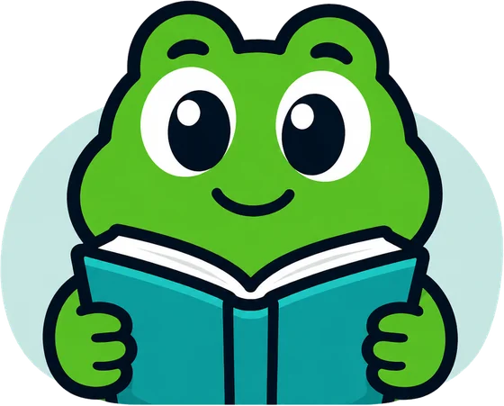

Profe Tuki con voz
Un tutor carismático y paciente que explica lecciones con voz clara, felicita aciertos y guía paso a paso cuando hay dudas conceptuales.

TIUK transforma cualquier asignatura escolar en una emocionante aventura RPG. Explora islas de conocimiento, supera desafíos pedagógicos y aprende junto a Profe Tuki, tu tutor interactivo con voz que te guía en cada paso, ¡incluso sin conexión a internet!
¡Hola! Soy Tuki 👋

TIUK es una plataforma de aprendizaje gamificado que toma las mecánicas más adictivas y motivadoras de los videojuegos y las pone al servicio de la educación. Con una dinámica ágil inspirada en Duolingo y en los juegos de rol clásicos, los estudiantes avanzan por un mapa de islas resolviendo puzles didácticos y respondiendo a contrarreloj para salvar mundos de conocimiento.
A diferencia de las aplicaciones tradicionales limitadas a un solo curso, TIUK no tiene fronteras: los docentes tienen el control total para construir lecciones de cualquier materia mediante un creador intuitivo. Los contenidos cobran vida en tres idiomas con igualdad de condiciones y funcionan plenamente en dispositivos móviles sin necesidad de datos ni wifi.


El profesor diseña unidades interactivas, rutas de estudio y desafíos personalizados en el builder para Windows y Android. Define preguntas, puzles y recompensas en cuestión de minutos.

El estudiante recorre islas temáticas en la App Estudiante (Android). Supera batallas pedagógicas con respuestas cronometradas y recibe retroalimentación hablada de Profe Tuki al instante.

Cada lección completada otorga puntos XP, desbloquea logros y fortalece la racha de estudio diaria. Todo el progreso se resguarda en el dispositivo y se sincroniza en línea o mediante código QR.
Un tutor carismático y paciente que explica lecciones con voz clara, felicita aciertos y guía paso a paso cuando hay dudas conceptuales.
Exploración de mapas por islas, caminos de lecciones progresivos, batallas pedagógicas con golpes cronometrados y puzles desafiantes.
Gamificación comprobada: acumula experiencia en cada acierto, conserva rachas consecutivas de estudio y desbloquea medallas de maestría.
Juega y progresa sin cobertura. Al reconectar se sincroniza automáticamente, y en emergencias los resultados y tareas se transfieren por código QR.
Soporte nativo en Español, English y Miskito con voces reales grabadas y contenidos validados para respaldar la preservación cultural y lingüística.
Inteligencia artificial que corre localmente en el móvil sin depender de la nube ni consumir datos, adaptando las pistas al ritmo de cada alumno.
Tuki es una ranita verde con capa turquesa y una medalla de libro. Es el corazón de TIUK: "Profe Tuki" acompaña a cada estudiante, celebra sus victorias y le anima con entusiasmo en cada desafío.


La aventura RPG donde el estudiante vive cada lección como un reto épico, gana medallas y aprende a su propio ritmo.

La central creativa y de control pedagógico para que el educador diseñe actividades fascinantes y supervise el aprendizaje de su grupo.